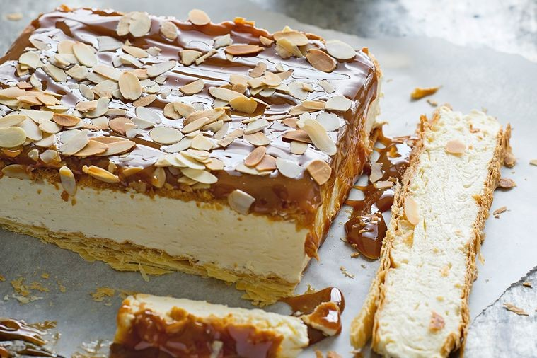

Caramel Cake

Description
This cake is so easy to make and absolutely delicious. It is best to make it the same day you plan to eat it, but it still keeps well for a day. Enjoy with a cup of tea in the afternoon. This recipe comfortably serves 8 and takes about an hour to make.
Ingredients
- 2 sheets puff pastry
- 4 titanium-strength gelatine leaves
- 600ml thickened cream
- 2 tsp vanilla extract
- 1/4 cup (55g) caster sugar
- 250g dulce le leche or caramel spread
- 3/4 cup (75g) flaked almonds, roasted
Steps
- Preheat the oven to 200°C. Grease a 20cm square cake pan and line with baking paper, leaving some overhanging (this will make the cake easier to remove).
- Lay the pastry sheets on a large baking tray lined with baking paper (alternatively, use 2 trays and swap trays during baking). Prick the pastry with a fork. Cover with baking paper and place another baking tray on top to weigh it down.
- Bake for 20 minutes or until pale golden. Remove the top baking tray and baking paper, then bake for a further 10-15 minutes or until golden. Set aside to cool.
- Soak gelatine in a bowl of cold water for 5 minutes to soften. Squeeze excess water from gelatine, then add the leaves to 1/4 cup (60ml) hot water. Stir until melted and combined, then set aside to cool.
- Using an electric mixer, whisk cream, vanilla, and caster sugar in a bowl until thick. Stir in the dissolved gelatine.
- Cut the pastry sheets to fit the cake pan. Place 1 pastry square in the pan top with the cream filling. Place the second pastry square over the filling.
- Dot the dulce de leche, then, using a palette knife, spread evenly and sprinkle with flaked almonds. Chill for at least 4 hours or until the filling has set.
- Carefully remove cake from the pan. Slice into pieces and serve.